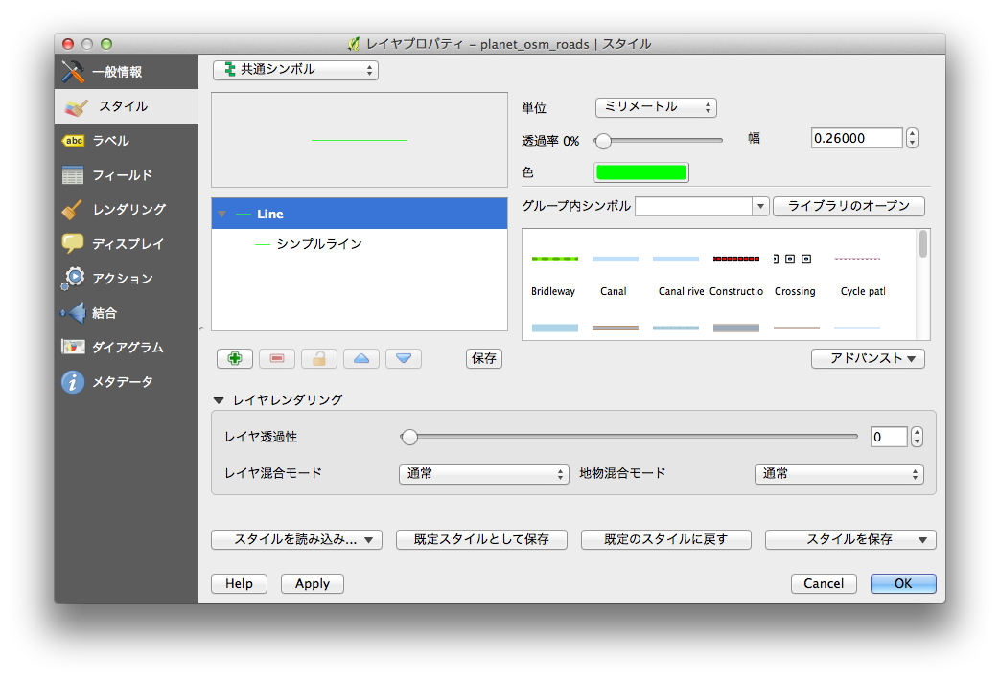
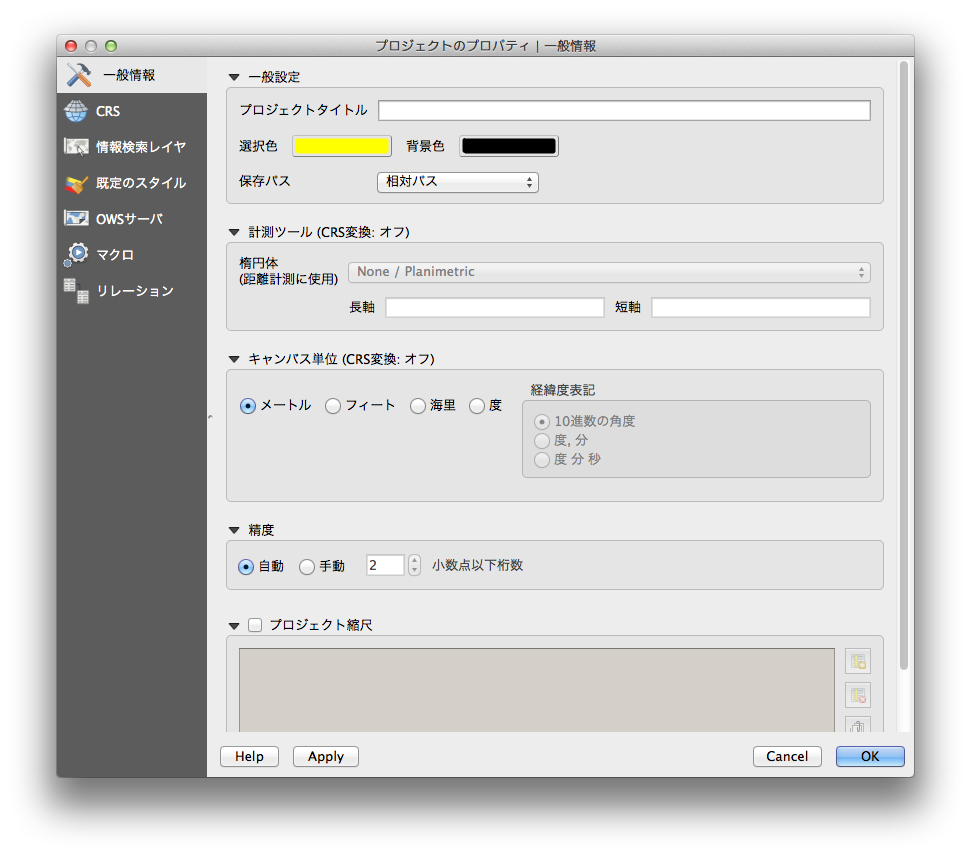
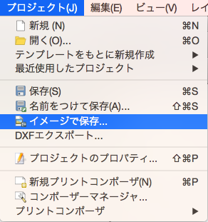

今回は小ネタとして、QGISで表示されている画面を、画像として出力する方法をご紹介します
QGISのスタイルの変更
画像を出力する前に、見栄えをよくするために、スタイルを変更しましょう
レイヤ毎のスタイルは
レイヤを選択→右クリック→プロパティ→スタイル で変更できます

プロジェクトのスタイルは
プロジェクト→プロジェクトのプロパティ→一般情報 で変更します
背景色と選択した地物の色が選べます。

画像を出力
プロジェクト→イメージで保存
出力形式を選んでSaveを押すだけです。
簡単ですね

QGISで分析した結果をプレゼンで使う、、、なんていう場面で必要になると思われます。
画像を出力するという機会がなくても、
スタイルの変更方法は覚えておいた方がいいかなと思います。
というのも、
デフォルトの背景色は白なのですが、
レイヤを追加するとQGISが勝手にスタイルを決めるので、
たまにすっごく薄い黄色とかになって、とてつもなく見づらいのです、、、
私は背景色を黒、選択した地物を黄色にして、
レイヤは見づらかったら、ピンクとかブルーに適当に変えています